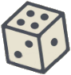

Ceci est un simulateur de dés en ligne - il est conçu pour les cas où vous besoin lancer de dés, mais il n'y en a pas de réels à portée de main.
Un dé virtuel peut avoir n'importe quel nombre de faces, ce qui est clairement son avantage. Aussi, vous pouvez le trouver pratique que son utilisation permet simplement d'économiser un peu de temps.
Les dés sont utilisés pour générer des nombres aléatoires dans des jeux de hasard, par exemple dans le craps et le yahtzee, et sont également largement utilisés dans les jeux de société (comme trictrac et Monopoly) et les jeux de rôle sur table (JdR) tels que D&D.;
Le dé réel est une figure tridimensionnelle avec des marques sur ses côtés (pépins, chiffres ou autres symboles) marquant la valeur du lancer. Sa forme traditionnelle est un cube (6 faces - d6), mais il existe d'autres formes (d3, d4, d8, d10, d12, d20, d100 etc.) - les dés non cubiques sont principalement utilisés dans les jeux de rôle.
Cette application en ligne, il est facile d'utiliser différents types de dés dans différentes combinaisons pour votre jeu.